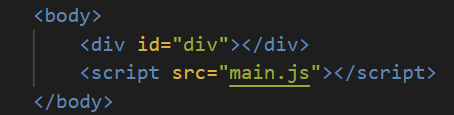

Event loop
Event loop with clearTimeout method
LATER, but not necessary right after NOW

main.js
div.onclick = function () {
alert('Click!');
}
function click () {
div.click();
}
function saySmth () {
setTimeout(() => {
alert('Hello, world!');
}, 0)
}
saySmth();
click();
Keeping our page at a life state
Bad:
someLongArray = [];
someSlowFunc () {};
someLongArray.forEach((item) => {
someSlowFunc(item);
});
Good:
someLongArray = [];
someSlowFunc () {};
someLongArray.forEach((item) => {
setTimeout(() => {
someSlowFunc(item);
}, 0);
});
Avoid synchronic requests
Bad:
let response = ajax('https://example.com');
console.log(response);
Good:
ajax('https://example.com', function (response) {
console.log(response);
});
Promise
Job queue stands before call queue but after the main part of the code.
Thank you for your attention!